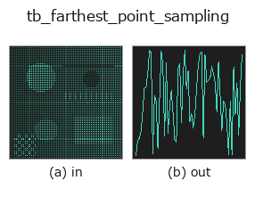

typed op• Data kinds: points → signal
• Call: fullseye.apply(img, "tb_farthest_point_sampling", a=0.5, b=0.5) (the 2-D model is one image plus two scalar knobs a,b∈[0,1])

*The figure is the actual output on a synthetic 128×128 input. Left: input, right: output. Point clouds are drawn as a top-down scatter (brightness = z), 1-D series as a line plot, volumes as the maximum-intensity projection along z, videos as the middle frame, complex images as magnitude; return values that are not pictures are shown as the values themselves.*
Sweeping knob a (0.1 / 0.5 / 0.9, the other knob at its default):
▸ tb_farthest_point_sampling: knob a sweep (docs site)
*Knob b does not change the output (measured: identical at 0.1 / 0.5 / 0.9).*
Stages (the ops that come before → this op, left to right):
▸ tb_farthest_point_sampling: stages (docs site)
On other images (synthetic scene / photo / coins. Top row: inputs, bottom row: their outputs. Knobs at default):
▸ tb_farthest_point_sampling: other inputs (docs site)
Farthest point sampling based on geodesic distance (even thinning). → an array of selected indices (n,) int.
A greedy method (FPS) that takes start as the first representative point and adds, 1 at a time, "the point with the largest geodesic distance to the set of already chosen points". Distances are measured with Dijkstra on the undirected kNN graph of knn_graph(points, k); the distance to the chosen set is kept as the element-wise minimum mind of each representative's single-source distances, and each time 1 representative is added it is updated by mind = min(mind, d_new). 1 Dijkstra run per 1 representative, so the cost is n runs of single-source shortest paths. No random numbers are used; deterministic.
• points: (N,3) point cloud. n: desired number of points. Values above N are rounded to N, negative values to 0 (0 gives an empty array).
• k: number of neighbours of the kNN graph (default 8). start: first representative point (wrapped into range by start % N).
• Returns the index sequence in the order chosen (starting with start). points[idx] gives the representative points.
Pitfall: if the graph splits into several connected components, unreachable points have distance inf, so unreached components are chosen first (argmax picks up inf). This results in "take the distant clusters first" behaviour, so if you want to thin out each component evenly, split them first with euclidean_cluster or similar.
The 3d op farthest_point_sampling bridged into the 2-D evolution registry. The implementation is the same; only the calling convention is adapted to op(v, a, b). a sweeps k (default 8). b is unused.
• Sample-data catalog (download URLs / licences) — 2-D uses skimage.data (BSD/public domain) plus synthetic images; 3-D lists download URLs for real data sources (Stanford, PDS, …).
• Operator provenance and references — the sources of the research/methods this op family came from.
The program below has been verified to run (same input as the figure). In Studio's help this block becomes buttons that load and run it on the spot.
img_to_points 0.50 0.50 tb_farthest_point_sampling 0.50 0.50
▸ Load this pipeline · Load & run
The examples below call the underlying ledger op farthest_point_sampling. This bridge op is the same implementation adapted to the fn(v, a, b) convention, so the behaviour carries over unchanged (only the call form differs).
• geodesic_distance — py -3.11 examples_3d/geodesic_distance.py
• pointcloud_downsampling — py -3.11 examples_3d/pointcloud_downsampling.py
signal as input)identity · tb_create_funct_1d_array · tb_smooth_funct_1d_gauss · tb_smooth_funct_1d_mean · tb_derivate_funct_1d · tb_integrate_funct_1d · tb_zero_crossings_funct_1d · tb_abs_funct_1d
typed)tb_points_to_voxel · tb_estimate_point_normals · tb_iss_keypoints · tb_project_points · tb_render_point_depth · tb_statistical_outlier_removal · tb_radius_outlier_removal · tb_voxel_grid_downsample
*Provenance: ops.py — 2D operator registry. This per-op note is generated by tools/opdocs.py md (do not hand-edit).*
© 2026 Kazufumi Furuse — Fullseye operator documentation. Licensed under Apache-2.0.